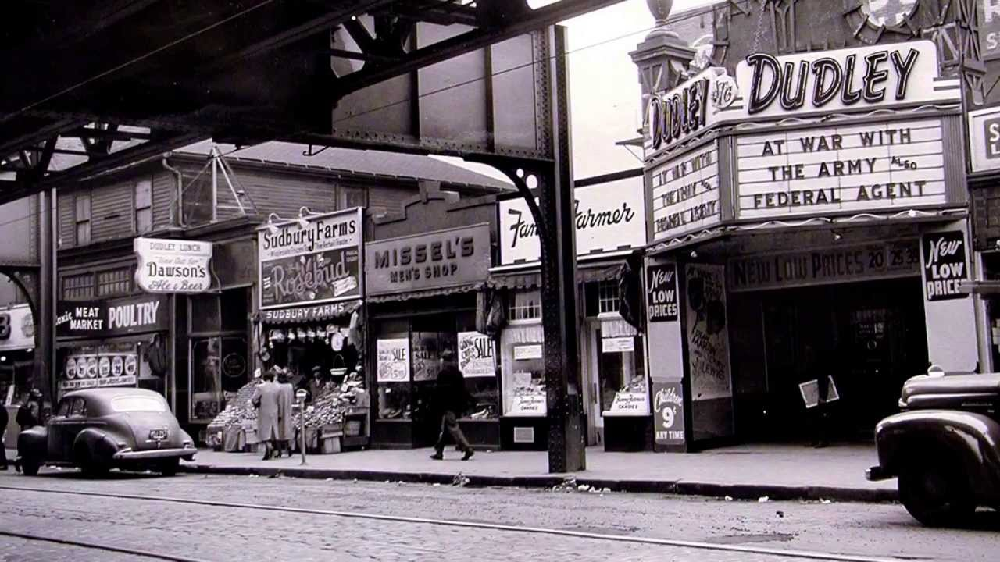
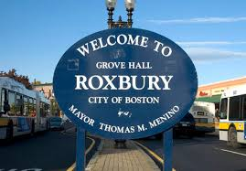
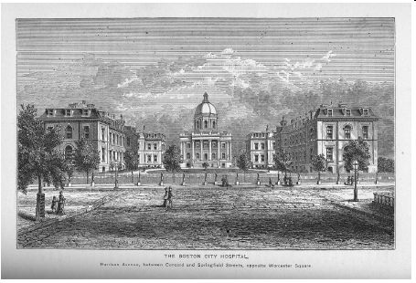
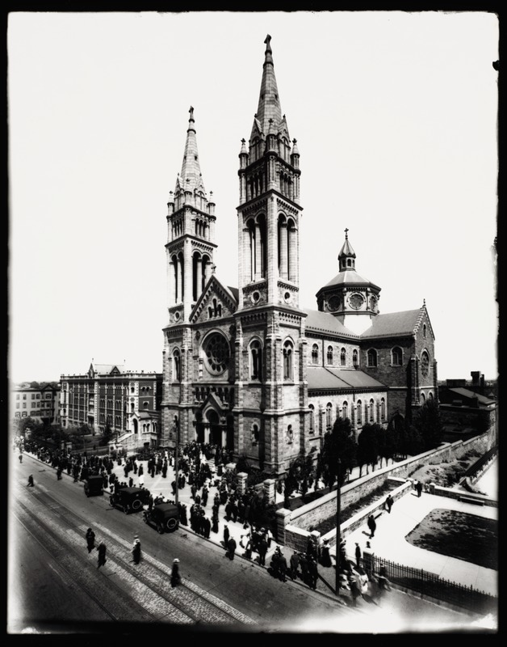

Welcome to Roxbury Readers! A site about Roxbury, Massachusetts
Dudley Square

Grove Hall


Old Dearborn House, 1868
Lower Roxbury

Boston City Hospital
Parker Hill

Mission Church, 1545 Tremont Street, 1919
Warren Street
Warren House, 130 Warren Street, 1940
Discover Roxbury
Learn more about the history of Roxbury.